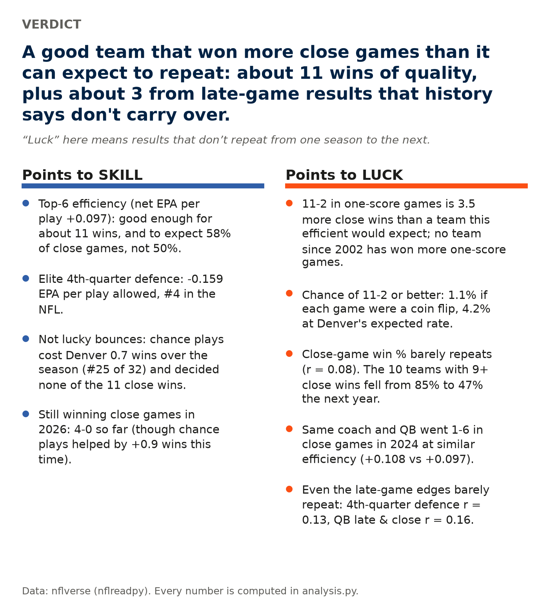
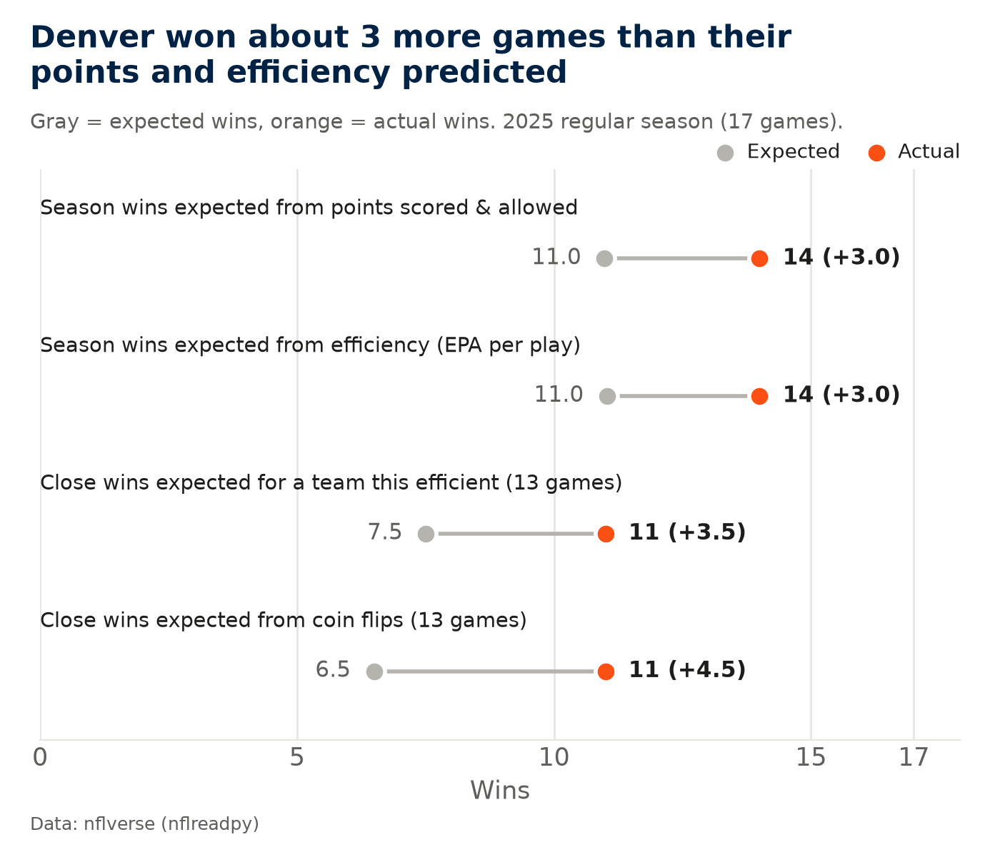
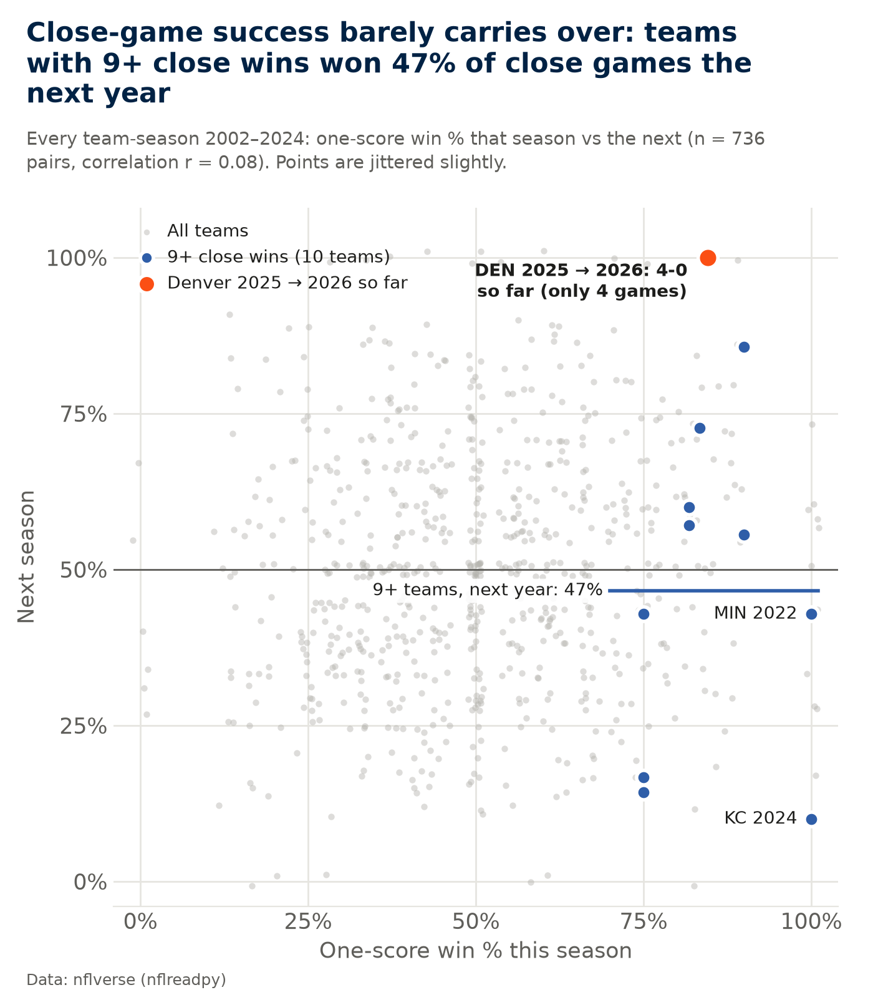
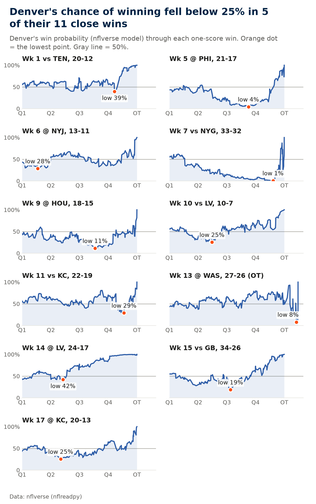
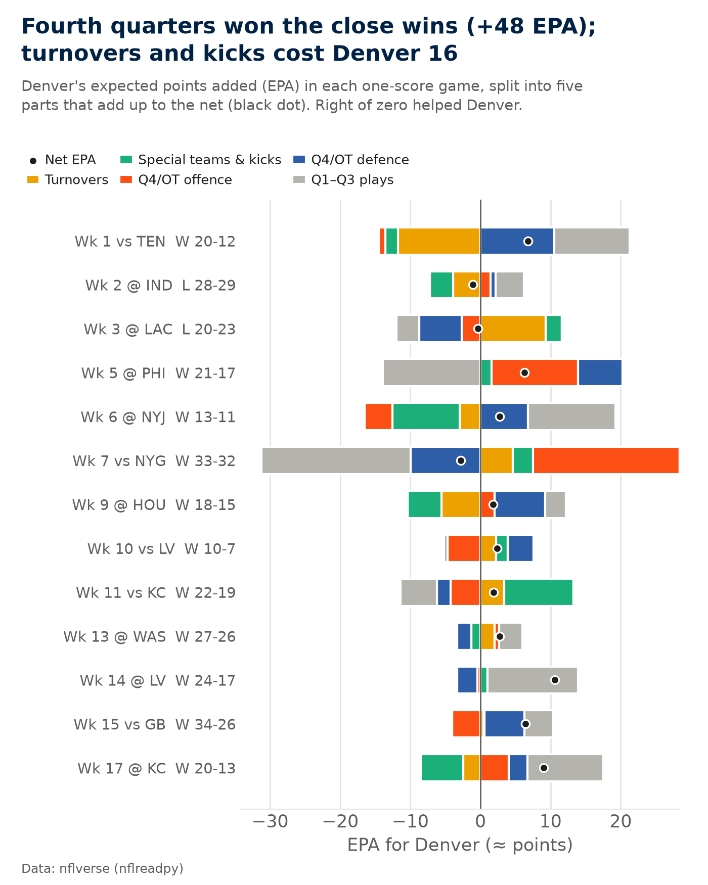
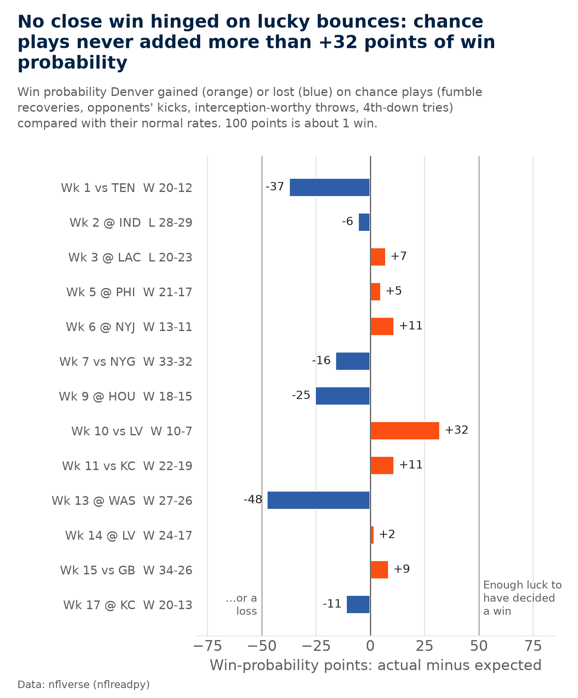
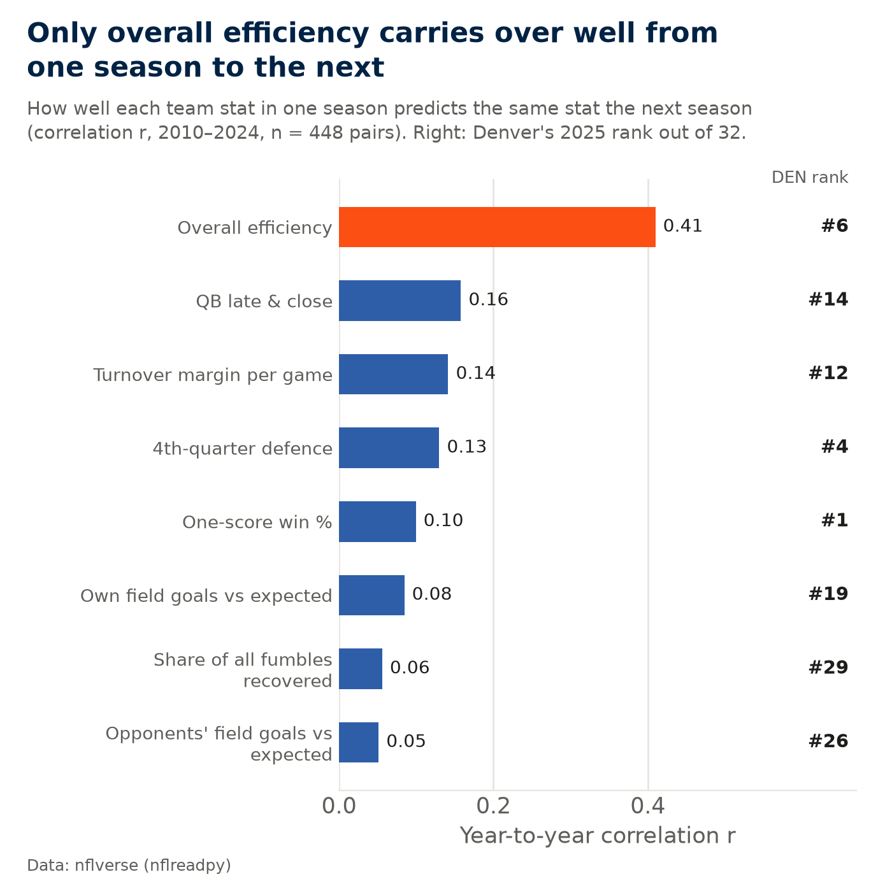

NFL data analysis · Python
Broncos 2025: luck or skill?
The 2025 Denver Broncos went 14-3 and won 11 of 13 games decided by 8 points or fewer. Were they really that good in close games, or did those games break their way?
Denver were a good team in 2025: 6th of 32 in efficiency. But winning 11 of 13 close games was well beyond what that efficiency predicts, and history shows close-game records don't carry over. The extra wins did not come from lucky bounces like fumbles or missed kicks. They came from winning fourth quarters, which also tends not to repeat from one season to the next.
What “luck” means here: results that don't repeat from one season to the next. It doesn't mean the players did nothing right; winning a fourth quarter takes real plays. Section 6 measures the narrowest kind of luck, chance plays such as fumble recoveries and missed kicks, and those actually went against Denver.

0. Checking the starting figures
Before any analysis, every figure in the question was recomputed from nflverse schedules. A one-score game is one decided by 8 points or fewer (regular season; playoffs reported separately; a tie would count as half a win). All figures match.
| Figure | Stated | From the data | Match |
|---|---|---|---|
| 2025 regular-season record | 14-3 | 14-3 | yes |
| 2025 one-score record (8 points or fewer) | 11-2 | 11-2 | yes |
| 2025 point differential | +90 | +90 | yes |
| Divisional round vs Buffalo | W 33-30 | W 33-30 | yes |
| AFC Championship vs New England | L 10-7 | L 10-7 | yes |
| 2026 record so far | 4-2 | 4-2 | yes |
| 2026 one-score record so far | 4-0 | 4-0 | yes |
1. Denver won about 3 more games than expected
There are two standard ways to estimate how many games a team should have won. From points, using the Pythagorean formula (points scored^2.37 ÷ (scored^2.37 + allowed^2.37)): a team that scores 401 and allows 311 usually wins 11.0 of 17. From efficiency: a straight-line fit of win % on net EPA per play (offence minus defence) across 480 team-seasons from 2010 to 2024 (R² = 0.78) gives 11.0.
Denver won 14, which is +3.0 above the points estimate and +3.0 above the efficiency estimate. That was the largest gap in the league in 2025. Their efficiency ranked 6th, so the team was good; the record just ran ahead of how they played.
Close games. Fitting one-score win % on net EPA per play (same team-seasons, 4,060 one-score games, weighted by games played) shows that a team as efficient as Denver typically wins 58% of close games. That is better than 50%, but efficiency explains only a small part of close results (R² = 0.19). That means 7.5 expected close wins out of 13. Denver won 11: +3.5 above expectation.
How to read the chart: each row is one estimate. The gray dot is what was expected, the orange dot is what happened, and the gap between them is what efficiency can't explain.

2. How unlikely is 11-2?
If every one-score game were a 50/50 coin flip, the chance of winning 11 or more of 13 is 1.1% (about 1 in 89). At Denver's efficiency-based rate of 58% per game, it is 4.2% (about 1 in 24).
That is rare for any one team, but with 32 teams every season, someone usually ends up with an unusual close-game record. Since 2002, 3 of 768 team-seasons won 11 or more one-score games. Denver 2025 is one of them, and nobody won more. The others: MIN 2022 (11-0 in close games) went 6-8 in close games and 7-10 overall the next year; KC 2024 (11-0 in close games) went 1-9 in close games and 6-11 overall the next year.
In plain words: even for a good team, 11-2 in close games is unusual. That is the first sign that something other than skill was involved.
3. Close-game records don't repeat
10 teams since 2002 won 9 or more one-score games in a season. Together they won 85% of their close games. The next season the same teams won 47%, slightly worse than a coin flip. Their wins fell from 12.3 to 8.8 per 17 games, and 7 of 10 won fewer games.
Across all 736 pairs of consecutive team-seasons, one season's one-score win % predicts the next with a correlation of just r = 0.08 (0 means no relationship, 1 means it repeats exactly). Overall win % carries over much more (r = 0.33).
How to read the chart: each gray dot is one team-season. If close-game records repeated, the dots would rise from bottom-left to top-right. Instead they form a flat cloud around 50%. Denver's 2026 point (orange) is based on only a few games so far.

Show the table
| Team | Season | Close games | Record | Next yr close | Next yr record |
|---|---|---|---|---|---|
| MIN | 2022 | 11-0 | 13-4 | 6-8 | 7-10 |
| KC | 2024 | 11-0 | 15-2 | 1-9 | 6-11 |
| SEA | 2019 | 10-2 | 11-5 | 8-3 | 12-4 |
| CAR | 2003 | 9-3 | 11-5 | 1-5 | 7-9 |
| IND | 2012 | 9-1 | 11-5 | 6-1 | 11-5 |
| DEN | 2015 | 9-3 | 12-4 | 3-4 | 9-7 |
| LV | 2016 | 9-2 | 12-4 | 4-3 | 6-10 |
| DAL | 2018 | 9-3 | 10-6 | 1-6 | 8-8 |
| PIT | 2023 | 9-2 | 10-7 | 6-4 | 10-7 |
| MIN | 2024 | 9-1 | 14-3 | 5-4 | 9-8 |
4. The 11 close wins, one by one
Win probability is nflverse's play-by-play estimate of each team's chance of winning, based on the score, time left, field position, down and distance. In 5 of the 11 close wins Denver's chance fell below 25% at some point, and in 3 it fell below 10% (Wk 5 @ PHI at 4%, Wk 7 vs NYG at 1%, Wk 13 @ WAS at 8%).
How to read the chart: the line is Denver's chance of winning from kick-off to the final whistle. A line that dips far below the gray 50% mark and still finishes at 100% is a comeback.
Playoffs (also one-score games, shown separately): Wk 20 vs BUF: W 33-30 (OT), lowest win chance 21%, turnover margin +4; Wk 21 vs NE: L 7-10, lowest win chance 0%, turnover margin -2.

Show the table
| Game | Result | Low win % | TO margin | Q4 off EPA | Q4 def EPA | Luck (WP pts) |
|---|---|---|---|---|---|---|
| Wk 1 vs TEN | W 20-12 | 39% | 0 | -1.0 | +10.5 | -37 |
| Wk 2 @ IND | L 28-29 | 0% | -1 | +1.4 | +0.8 | -6 |
| Wk 3 @ LAC | L 20-23 | 0% | +2 | -2.7 | -6.0 | +7 |
| Wk 5 @ PHI | W 21-17 | 4% | 0 | +12.3 | +6.3 | +5 |
| Wk 6 @ NYJ | W 13-11 | 28% | -1 | -4.0 | +6.8 | +11 |
| Wk 7 vs NYG | W 33-32 | 1% | +1 | +20.9 | -9.9 | -16 |
| Wk 9 @ HOU | W 18-15 | 11% | 0 | +2.0 | +7.3 | -25 |
| Wk 10 vs LV | W 10-7 | 25% | -1 | -4.7 | +3.7 | +32 |
| Wk 11 vs KC | W 22-19 | 29% | +1 | -4.2 | -1.9 | +11 |
| Wk 13 @ WAS | W 27-26 | 8% | 0 | +0.6 | -2.0 | -48 |
| Wk 14 @ LV | W 24-17 | 42% | 0 | -0.4 | -2.9 | +2 |
| Wk 15 vs GB | W 34-26 | 19% | +1 | -4.0 | +5.7 | +9 |
| Wk 17 @ KC | W 20-13 | 25% | -1 | +4.1 | +2.6 | -11 |
5. What decided the close games: fourth quarters, not takeaways
EPA (expected points added) measures how much each play changed the number of points a team can expect to score. Each play goes into exactly one of five buckets: turnovers first, then special teams and kicks, then fourth-quarter/overtime offence and defence, then everything else. So the five parts add up to Denver's net EPA for the game.
Across the 11 close wins: Q4/OT defence +26.1, Q4/OT offence +21.6, Q1–Q3 plays +16.4, turnovers -10.1, special teams and kicks -6.1. Denver didn't win these games with takeaways or kicking. They won them late: the defence got stops and the offence made plays when it counted.
4th downs: across all 13 one-score games Denver went for it 16 times and converted 9. Together those attempts changed Denver's win probability by +43 points (about 0.4 wins), so going for it was a modest plus.
How to read the chart: each row is one game. Coloured pieces to the right of zero helped Denver and pieces to the left hurt them. The black dot is the net.

6. High-leverage luck: did the bounces go Denver's way? No.
Some plays are mostly chance. This measure covers four kinds: fumble recoveries (who falls on the ball), opponents' field goals and extra points (compared with the league make rate at that distance), interception-worthy throws (FTN charting flags throws that should have been picked off; which of them actually are is largely chance), and 4th-down tries (compared with the league conversion rate at that distance).
For each play: luck = actual change in win probability − expected change. The expected change weights the good and bad outcomes by how often each normally happens. 100 points of win probability is about one win. Example: in week 10, an opponent's field goal ("(4:30) 8-D.Carlson 48 yard field goal is No Good, Wide Right") was a make 83% of the time at that distance. It missed. The swing between a make and a miss was 22 points of win probability, so Denver's luck on that one play was +18 points.
Season total: -0.75 wins from chance plays, 25th of 32 (the spread between teams is about ±1.05 wins). By type: fumbles -0.47, opponents' kicks -0.36, interception-worthy throws -0.12, 4th downs +0.21. In the 13 close games combined: -67 points. None of the 11 close wins would flip to a likely loss if the chance plays had gone at normal rates.
This kind of luck does not repeat. Across all teams, one season's chance-play luck predicts the next with r = 0.01 (2022–2025, n = 96 pairs).
Simulation. Replaying the 13 close games 20,000 times with every chance play redrawn at its normal rate, and everything else kept the same, gives an average of 10.2 close wins (middle 80% of replays: 9 to 11). 11 or more happens in 41% of replays. The average is a little below 11 even though chance plays went slightly against Denver. That's because a game can't be more than won: when replayed bounces go Denver's way in a game they already won, nothing changes, but when they go the other way a win can turn into a loss.
How to read the chart: each bar is the win probability Denver gained (orange) or lost (blue) from chance plays in that game. A win would only count as "decided by luck" if its bar passed the +50 line.

7. Skill signals vs luck signals
A stat only counts as a skill signal if it carries over from one season to the next. For every stat below, the year-to-year correlation is measured across all teams from 2010 to 2024 (r ≥ 0.30 = repeats; 0.15–0.30 = weakly; below 0.15 = barely or not). Ranks are out of 32, where 1 is best for Denver.
Denver's 2025 strengths were concentrated late in games: 4th-quarter defence ranked #4. But late-game stats barely repeat for any team (r = 0.13 for Q4 defence, 0.16 for QB play late in close games). Overall efficiency is the one that holds up (r = 0.41).
The classic luck stats did not favour Denver. They recovered only 37% of fumbles (#29), and opponents made 5.6 more field goals per 100 attempts than expected against them. Denver's own kicking was about average (-1.8 makes per 100 attempts vs expected).

| Stat | Denver 2025 | League avg | DEN rank | Year-to-year r | Repeats? |
|---|---|---|---|---|---|
| Overall efficiency (net EPA per play) | +0.097 | -0.001 | #6 | 0.41 | Repeats |
| 4th-quarter defence (EPA allowed per play) | -0.159 | -0.012 | #4 | 0.13 | Barely / not |
| QB late & close (EPA per dropback, Q4/OT, within 8) | +0.080 | +0.035 | #14 | 0.16 | Weakly |
| Own field goals vs expected (per attempt) | -1.8 pts | -0.2 pts | #19 | 0.08 | Barely / not |
| Share of all fumbles recovered | 37% | 50% | #29 | 0.06 | Barely / not |
| Opponents' field goals vs expected (per attempt) | +5.6 pts | -0.2 pts | #26 | 0.05 | Barely / not |
| Turnover margin per game | +0.06 | +0.00 | #12 | 0.14 | Barely / not |
| One-score win % | 85% | 49% | #1 | 0.10 | Barely / not |
8. Denver across seasons, and the 2026 live check
The cleanest comparison is Denver against itself. In 2024, the same coach and quarterback went 1-6 in one-score games with almost the same efficiency (+0.108 net EPA per play vs +0.097 in 2025). The team's quality barely changed, but the close-game record swung from 1-6 to 11-2.
2026 so far (through week 6): 4-2 overall and 4-0 in one-score games. Efficiency has dropped to -0.018 (#19 of 32), so a team like this would expect to win about 49% of close games. Winning all 4 has a 5.7% chance. And unlike 2025, the chance plays in those games went Denver's way: +91 points of win probability in total (about 0.9 wins), positive in 4 of 4 games, though no single game passed the ±50 line (none decided by luck). Replaying them with chance plays at normal rates gives about 3.0 wins out of 4.
Across 2024–2026 (same coach and QB), Denver are 16-8 in one-score games against 13.6 expected. The chance of 16 or more at their expected rates is 21.3%.
What the live check means: the 2026 start is the best evidence on the skill side. Some real, repeatable late-game edge that efficiency stats miss can't be ruled out. But it is only 4 games, chance plays have helped this time, the 2024 record points the other way, and history says to expect close-game records to drift back toward what efficiency predicts. Worth re-running at the end of the season.
| Season | Record | One-score | Expected one-score wins | Net EPA/play (rank) |
|---|---|---|---|---|
| 2023 | 8-9 | 5-4 | 4.1 of 9 | -0.064 (#25) |
| 2024 | 10-7 | 1-6 | 4.1 of 7 | +0.108 (#8) |
| 2025 | 14-3 | 11-2 | 7.5 of 13 | +0.097 (#6) |
| 2026 (thru wk 6) | 4-2 | 4-0 | 2.0 of 4 | -0.018 (#19) |
Method, assumptions and limits
Data. nflverse schedules (2002–2026), play-by-play (2010–2026) and FTN charting (2022–2026), loaded with `nflreadpy`. Regular season unless stated. Relocated teams (OAK→LV, SD→LAC, STL→LA) keep one code so "next season" follows the franchise. All models are fitted on 2010–2024, so Denver 2025 is never used to fit the model that judges it.
Definitions. One-score game: final margin of 8 points or fewer. EPA per play: passes and runs only (the standard nflverse filter). Net EPA per play = offence EPA/play − defence EPA/play allowed. Pythagorean exponent 2.37.
High-leverage luck — assumptions.
- nflverse publishes win probability (WP) only for what actually happened. For the outcome that didn't happen (e.g. the fumble that the other team recovered), the WP comes from a stand-in model trained to reproduce nflverse's WP from the game state (2016–2024 plays, gradient boosting). Tested on every 2025 play (n = 40,778), it differs from nflverse's own WP by 1.2 percentage points on average (90% of plays within 2.4).
- The alternative outcome is placed simply: a lost fumble gives the other team the ball at the same spot; an interception happens at the target spot with no return; a missed kick gives the ball back at the spot of the kick; a made kick or a failed/converted 4th down is followed by a standard kickoff or change of possession. Returns, penalties and clock effects on the hypothetical branch are ignored.
- "Normal rates" come from the league: fumble recovery split by scrimmage vs special teams (2010–2024), field-goal make rate by 5-yard distance band in the same season, extra-point rate in the same season, interception rate for interception-worthy vs other throws (FTN, 2022–2024), 4th-down conversion rate by yards to go (2010–2024).
- Only opponents' kicks count as luck for Denver (Denver's own kicking is treated as skill). Plays with an accepted penalty are left out of the interception and 4th-down groups because the flag settled them.
- Adding up win-probability changes treats each chance play as independent and assumes the rest of the game would have gone the same way. In reality teams change their play-calling after a big swing. The game simulation shares this assumption.
Limits.
- Small samples everywhere: 13 close games in 2025, 2026 still in progress. The history group is only teams with 9+ close wins.
- "Luck" here means doesn't repeat, not random. Winning fourth quarters takes real players making real plays; the point is that it doesn't carry over from year to year, so it can't be relied on.
- FTN's "interception-worthy" label is a human charting judgement. Starting kickoff field position is a league median. 4th-down conversion rates are league-wide, not adjusted for opponent.
- Efficiency doesn't capture everything a coach controls (clock management, timeouts, late-game play-calling). Those may be real skills the models miss.